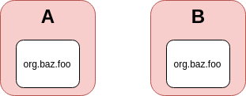

The Monolith
Opbreken!
Java Modularity
Java Modularity
module org.baz.foo {
}
Java Modularity
module org.baz.foo {
exports org.baz.foo.api;
}
Java Modularity
module org.baz.foo {
exports org.baz.foo.api;
requires org.acme.bar;
}
Java Modularity
module-info.java
module org.baz.foo {
exports org.baz.foo.api;
requires org.acme.bar;
}
Bottom-up

Types of modules
- Named modules
- Unnamed module
- Automatic modules
Command line parameters
Valkuilen

Valkuilen
- Toegang tot interne API's
- Andere classloaders
- Geen rt.jar
- Java versie is nu: 9
Start de migratie!
Transitive
module com.foo.baz {
requires transitive com.acme.bar;
}
Open
module com.foo.baz {
opens com.foo.baz.domain;
}
Services
module com.foo.baz {
requires com.acme.api;
uses com.acme.api.Service;
}
module my.api.impl {
requires com.acme.api;
provides com.acme.api.Service with
my.api.internal.ServiceImpl;
}